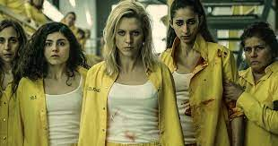
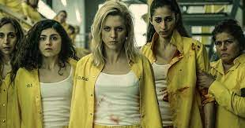
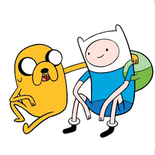
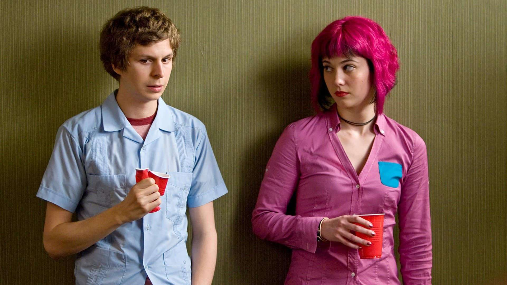
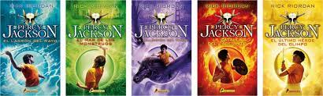

Vis a Vis
Nota: 5/5

Vis a Vis é uma série espanhola sobre detentas e seus problemas dentro e fora da prisão.
Para conhecer mais: Clique aqui

Vis a Vis é uma série espanhola sobre detentas e seus problemas dentro e fora da prisão.
Para conhecer mais: Clique aqui
As crônicas de gelo e fogo É uma saga de livros ficticios onde os diversos personagens vivem aventuras envolvendo guerra entre os territorios, traições, aventuras além do mundo civil e etc.
Para conhecer mais: Clique aqui

Hora de Aventura é uma animação voltada para, como diz o título, aventuras envolvendo os dois personagens principais, Jake e Finn.
Para conhecer mais: Clique aqui

Scott Pilgrim VS the world É um filme que segue a vida de Scott, em busca do amor de Ramona Flowers, além, claro, das aventuras contra os ex-namorados da garota.
Para conhecer mais: Clique aqui

Percy Jackson Percy Jackson é uma saga que envolve os semideus(filhos dos deuses gregos e romanos) onde eles tentam resolver as burradas que os pais causaram ou causarão.
Para conhecer mais: Clique aqui